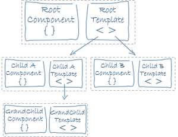
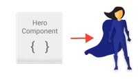
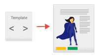
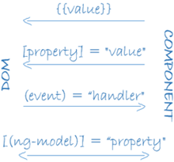

<div class="guides-archiecture-container">

  <div class="card">
    <div class="card-header">
      <h3><span class="badge badge-info">Section</span> 基础</h3>
    </div>
    <div class="card-body">
      <h4 class="card-title">Module <span class="badge badge-pill badge-info">Guide</span></h4>
      <pre class="card-text">

        # NgModule 是装饰功能，描述模块元数据对象的属性, 拥有的属性如下：
        # declarations  — 属于这个模块的视图类。角有三种视图类：组件、指令和管道。
        # export        - 在其他模块的组件模板中应该可见和可用的声明子集。
        # import        — 在模块中声明的组件模板所需的导出类的其他模块。
        # provider      — 这个模块对服务的全局集合做出贡献的服务创建者；它们在应用程序的所有部分都可以访问。
        # bootstrap     — 主应用程序视图，称为根组件，它承载所有其他应用程序视图。只有根模块应该设置这个引导属性。

        import {{'{'}} NgModule {{'}'}}      from '@angular/core';
        import {{'{'}} BrowserModule {{'}'}} from '@angular/platform-browser';

        @NgModule({{'{'}}
          imports:      [ BrowserModule ],
          providers:    [ Logger ],
          declarations: [ AppComponent ],
          exports:      [ AppComponent ],
          bootstrap:    [ AppComponent ]
        {{'}'}})
        export class AppModule {{'{'}} {{'}'}}
      </pre>

      <hr>

      <h4 class="card-title">Components <span class="badge badge-pill badge-info">Guide</span></h4>
      <pre class="card-text">

        

        # 视图由组件组装成。
        # 组件由component class & template & style构成

        import {{'{'}} Component, OnInit } from '@angular/core';

        @Component({{'{'}}
          selector: 'app-index',
          templateUrl: './index.component.html',
          styleUrls: ['./index.component.scss']
        {{'}'}})
        export class IndexComponent implements OnInit {{'{'}}

          constructor() {{'{'}} {{'}'}}

          ngOnInit() {{'{'}}
          {{'}'}}

        {{'}'}}
      </pre>

      <hr>

      <h4 class="card-title">Metadata <span class="badge badge-pill badge-info">Guide</span></h4>
      <pre class="card-text">

        # Metadata告诉angular如何处理类。
        # selector      - 组件选择器节点
        # templateUrl   - 组件模板加载路径
        # styleUrls     - 样式文件加载路径

        import {{'{'}} Component, OnInit } from '@angular/core';

        @Component({{'{'}}
          selector: 'app-index',
          templateUrl: './index.component.html',
          styleUrls: ['./index.component.scss']
        {{'}'}})
        export class IndexComponent implements OnInit {{'{'}}

          /** ... **/

        {{'}'}}
      </pre>

      <hr>

      <h4 class="card-title">Service <span class="badge badge-pill badge-info">Guide</span></h4>
      <pre class="card-text">

        # LoggerService
        export class Logger {{'{'}}
          log(msg: any)   {{'{'}} console.log(msg); {{'}'}}
        {{'}'}}

      </pre>

      <hr>

      <h4 class="card-title">Dependency Injection <span class="badge badge-pill badge-info">Guide</span></h4>
      <pre class="card-text">

        

        # constructor(private service: HeroService) {{'{'}}{{'}'}}

        # Service 注入使用
        export class HeroService {{'{'}}
          private heroes: Hero[] = [];

          constructor(
            private backend: BackendService,
            private logger: Logger) {{'{'}} {{'}'}} // 依赖注入

          getHeroes() {{'{'}}
            this.backend.getAll(Hero).then( (heroes: Hero[]) => {{'{'}}
              this.logger.log(`Fetched ${{'{'}}heroes.length{{'}'}} heroes.`);
              this.heroes.push(...heroes); // fill cache
            {{'}'}});
            return this.heroes;
          {{'}'}}
        {{'}'}}

        # 通常情况下 在root Module providers属性中添加注入,方便其他地方调用

        src/app/app.module.ts (module providers)
        providers: [
          BackendService,
          HeroService,
          Logger
        ],

        # 或者在组件级别注入,只为当前作用域调用

        src/app/hero-list.component.ts (component providers)
        @Component({{'{'}}
          selector:    'hero-list',
          templateUrl: './hero-list.component.html',
          providers:  [ HeroService ]
        {{'}'}})

      </pre>

      <hr>

      <h4 class="card-title">Templates <span class="badge badge-pill badge-info">Guide</span></h4>
      <pre class="card-text">

        
        

        # 模板是HTML的一种形式，它告诉角如何渲染组件。
        # 模板中支持表达式\指令\管道...,JS动态模板。

        &lt;ul&gt;
          &lt;li *ngFor="let hero of heroes" (click)="selectHero(hero)"&gt;
            {{'{'}}{{'{'}}hero.name{{'}'}}{{'}'}}
          &lt;/li&gt;
        &lt;/ul&gt;

      </pre>

      <hr>

      <h4 class="card-title">Data binding <span class="badge badge-pill badge-info">Guide</span></h4>
      <pre class="card-text">

        

        # 单项绑定
        &lt;li&gt;{{'{'}}{{'{'}}hero.name{{'}'}}{{'}'}}&lt;/li&gt;

        # 双向绑定
        &lt;input [(ngModel)]="hero.name"&gt;
      </pre>

      <hr>

      <h4 class="card-title">Directive <span class="badge badge-pill badge-info">Guide</span></h4>
      <pre class="card-text">

        &lt;li *ngFor="let hero of heroes"&gt;&lt;li&gt;

        &lt;hero-detail *ngIf="selectedHero"&gt;&lt;/hero-detail&gt;

      </pre>

      <hr>

      <h4 class="card-title">Pipe <span class="badge badge-pill badge-info">Guide</span></h4>
      <pre class="card-text">

        # 特殊情况下对数据进行处理,pipe管道 在angular 1.x中叫 filter 过滤器

        &lt;p&gt;The hero's birthday is {{'{'}}{{'{'}} birthday | date {{'}'}}{{'}'}}&lt;/p&gt;

      </pre>

      <hr>

      <h4 class="card-title">Event <span class="badge badge-pill badge-info">Guide</span></h4>
      <pre class="card-text">

        Events: The events documentation will cover how to use components and services to raise events with mechanisms for publishing and subscribing to events.

      </pre>

      <hr>

      <h4 class="card-title">Form <span class="badge badge-pill badge-info">Guide</span></h4>
      <pre class="card-text">

        Forms: Support complex data entry scenarios with HTML-based validation and dirty checking.

      </pre>

      <hr>

      <h4 class="card-title">Http <span class="badge badge-pill badge-info">Guide</span></h4>
      <pre class="card-text">

        HTTP: Communicate with a server to get data, save data, and invoke server-side actions with an HTTP client.

      </pre>

      <hr>

      <h4 class="card-title">Lifecycle <span class="badge badge-pill badge-info">Guide</span></h4>
      <pre class="card-text">

        Lifecycle hooks: Tap into key moments in the lifetime of a component, from its creation to its destruction, by implementing the lifecycle hook interfaces.

      </pre>

      <hr>

      <h4 class="card-title">Routing <span class="badge badge-pill badge-info">Guide</span></h4>
      <pre class="card-text">

        Router: Navigate from page to page within the client application and never leave the browser.

      </pre>

      <hr>

      <h4 class="card-title">Animations <span class="badge badge-pill badge-info">Guide</span></h4>
      <pre class="card-text">

        Animations: Animate component behavior without deep knowledge of animation techniques or CSS with Angular's animation library.

      </pre>


    </div>
  </div>

</div>
